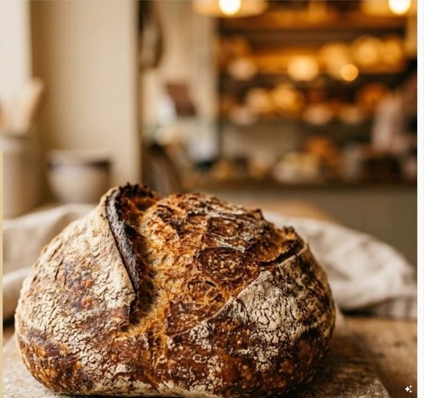
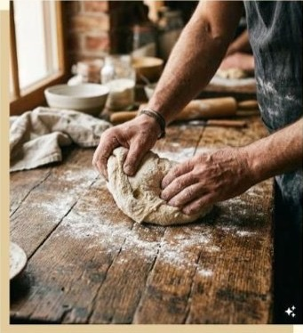
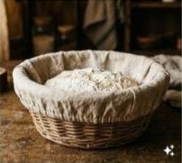
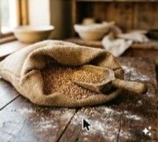
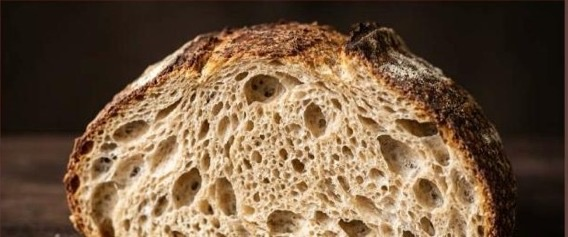
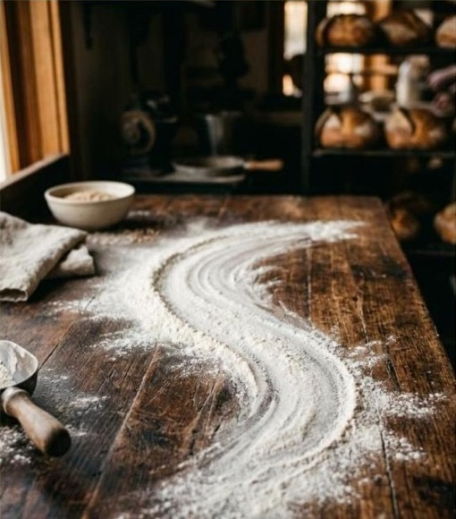
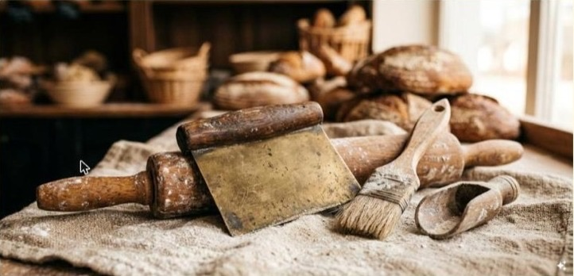
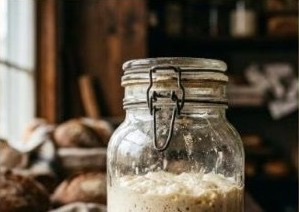
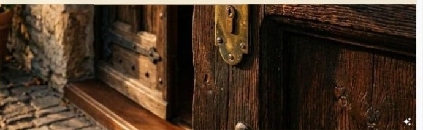

Rzemieślnicze serce Krosna w każdym bochenku
Chleb na naturalnym zakwasie, wypiek na miejscu od szóstej rano. Bez polepszaczy, bez pośpiechu — tak, jak piekło się w tym mieście od pokoleń.


Piekarnia, nie fabryka pieczywa
Kłos to trzyosobowy zespół, jeden piec i przepisy, które nie zmieniły się od otwarcia. Zakwas prowadzimy sami, mąkę bierzemy z młyna pod Krosnem, a każdy bochenek formujemy ręcznie — dlatego nie ma ich na półce nieskończenie wiele.
Trzy rzeczy, na których nam zależy

Rzemiosło
Długie wyrastanie, ręczne formowanie, pieczenie na kamieniu — bez skrótów, które psują smak.

Lokalność
Mąka z młyna pod Krosnem, jajka od okolicznych gospodarstw. Wspieramy sąsiadów, nie hurtownie.
Autentyczność
Ten sam smak co dwadzieścia lat temu. Bez polepszaczy, bez „ulepszonych” receptur na skróty.
Co znajdziesz na naszej ladzie
Chleby
Na słodko i słono

Zamów z tej listyOdbiór osobisty — bez czekania w kolejce
Zamawiasz z telefonu albo komputera, my przygotowujemy na wybraną godzinę. Przychodzisz na Rynek 14, odbierasz świeże, jeszcze ciepłe pieczywo i wracasz do swoich spraw. Zero stania w kolejce o poranku.
- 1Wybierasz pieczywo i godzinę odbioru — dziś lub jutro.
- 2My pieczemy i pakujemy na czas, dokładnie na Twoją godzinę.
- 3Odbierasz przy ladzie, płacisz na miejscu. Bez czekania, bez tłoku.
Z pieca prosto na ladę



Co mówią klienci
Chleb, po który wraca się codziennie. Skórka chrupiąca, środek wilgotny — dokładnie taki, jaki powinien być.
Przykładowa opinia demonstracyjnaZamawiałam tort na wesele córki — goście pytali o przepis. Zero sztucznych dodatków, czuć różnicę.
Przykładowa opinia demonstracyjnaMieszkam obok i to jedyna piekarnia, do której idę specjalnie po bułki maślane. Zawsze świeże.
Przykładowa opinia demonstracyjnaZajrzyj do nas na Rynek
ul. Rynek 14, 38-400 Krosno
- Godziny otwarcia
- Poniedziałek – piątek: 6:00 – 18:00
- Sobota: 6:00 – 14:00
- Niedziela: nieczynne
